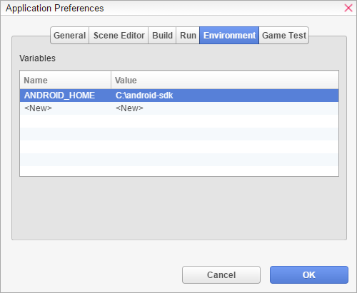
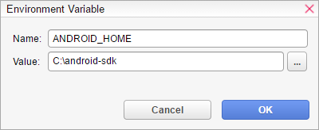

Visual Novel Maker allows you to modify the environment variables used by child processes such as build or run processes for your game. To modify environment variables, you need to openApplication PreferencesthroughThe Menu Barand go to the Environment tab.

There you can see all defined environment variables. Just double click an existing variable to edit or double click <New> to create a new environment variable.

The defined environment variables are only valid for: